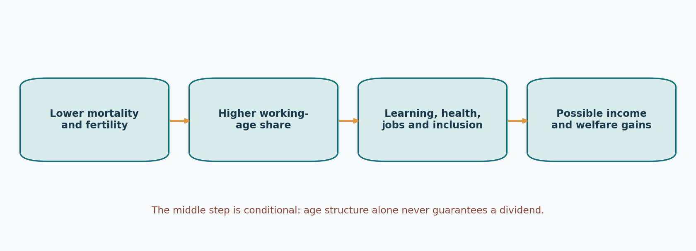
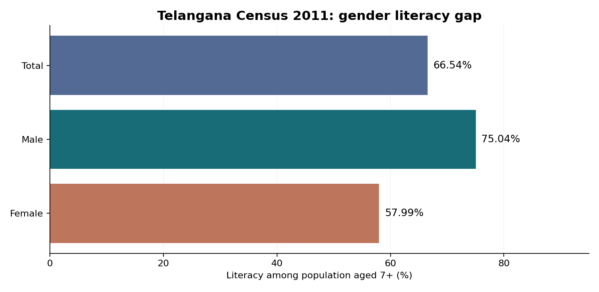
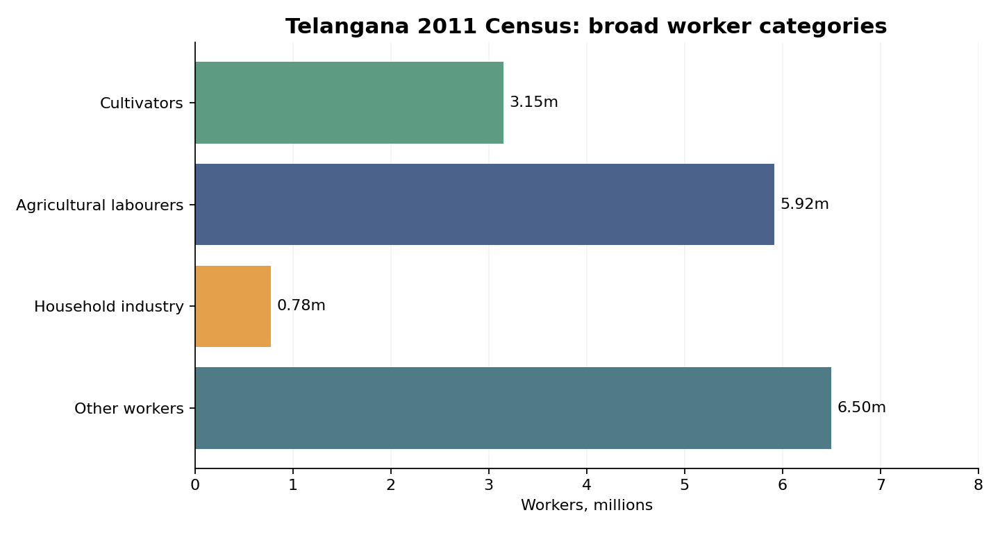

Paper IV — Economy and Development | Unit II — Telangana Economy | Topic 2
Human Resources: Demographic Transition, Demographic Dividend, Literacy, Occupations, Education and Health
Production status: Expanded original study draft; not independently academically approved.
Syllabus authority: Group I Notification 02/2024 (original commission-hosted PDF not directly retrievable in this run; exact wording corroborated against published reproduction).
Official syllabus wording: “Human resources: Demographic Structure and Transition , Demographic dividend , (sex ratio, fertility rate, mortality rates) ; Literacy and Occupation structure: Social Sector – Education and Health”.
Syllabus-to-content map
| Examinable syllabus component | Detailed coverage | Core examination test |
|---|---|---|
| Human resources | Sections 1, 14 | Capability, human capital, institutions and outcomes |
| Demographic structure | Sections 2, 13 | Age pyramid, migration, dependency and data provenance |
| Demographic transition | Sections 3, 5, 6 | Fertility–mortality transition, population momentum |
| Demographic dividend | Section 7 | First/second dividends, job quality, gender participation |
| Sex ratio | Section 4 | Census overall/child versus survey ratio at birth |
| Fertility rates | Sections 3, 5 | TFR, CBR, reproductive choice and Telangana trends |
| Mortality rates | Section 6 | IMR, NMR, MMR, SRS/NFHS differences |
| Literacy | Section 8 | 2011 gender and rural–urban gaps; learning quality |
| Occupational structure | Section 9 | Census worker categories, PLFS, structural transformation |
| Social sector — education | Section 10 | RTE, NEP, UDISE+, learning and school equity |
| Social sector — health | Section 11 | NHM, primary care, nutrition and financial protection |
| Cross-cutting equity and governance | Sections 12–14 | Disability, gender, tribal districts and source audit |
Topic summary
Human-resource development links population composition with the ability to live healthy, educated and productive lives. Telangana's 2011 Census counted 35.00 million people, a sex ratio of 988, literacy of 66.54%, and urbanisation of 38.88%. The demographic transition explains falling death rates followed by fertility decline; NFHS-5 estimated Telangana TFR at 1.8. A demographic dividend is only a potential gain from a larger working-age share, contingent on jobs, women's employment, learning and health. Overall sex ratio, child sex ratio and sex ratio at birth are distinct. TFR, crude birth rate, IMR and maternal mortality ratio have different denominators. Literacy is not synonymous with learning, and a large services share in GSDP does not establish good jobs for all workers. Education rights, public health, nutrition, gender equality, disability inclusion and district access turn population into capabilities. Census, NFHS, SRS, CRS, PLFS and UDISE+ must be cited with their years and definitions. NFHS-6 (2023–24, released 2026) and UDISE+ 2025–26 are newer sources, but exact new table values require direct primary-table verification. This chapter is an expanded draft, not an academically approved textbook.
How to use this chapter
Read the quick revision independently for recall; use the numbered concept chapters for mains depth. The visual charts distinguish census stocks from sample-survey estimates. All MCQs are original practice, not official past questions. Six mains answers include specific argument structures; they are original models, not verified official PYQs.
Standalone Quick Revision
Core formulae and definitions
- Sex ratio: females per 1,000 males; sex ratio at birth: female live births per 1,000 male live births; child sex ratio: usually ages 0–6 in Census.
- Crude birth rate / death rate: annual births / deaths per 1,000 mid-year people.
- TFR: sum of age-specific fertility rates expressed as expected births per woman under current age-specific patterns; not the crude birth rate.
- IMR: deaths before first birthday per 1,000 live births; NMR: deaths within first 28 days per 1,000 live births; MMR: maternal deaths per 100,000 live births.
- Dependency ratio: (0–14 population + 65+ population) / 15–64 population × 100; demographic convention, not an employment statistic.
- LFPR: employed plus unemployed seeking/available for work as share of population; WPR: employed as share of population; UR: unemployed as share of labour force.
- Census 2011 Telangana: 35,003,674 population; sex ratio 988; literacy 66.54%; male 75.04%, female 57.99%; urban 38.88%; decadal growth 13.58%.
- NFHS-5 Telangana (2019–21): TFR 1.8; survey sex ratio 1,049; survey sex ratio at birth 894; IMR 26.4. Never compare directly with Census or annual SRS.
- UDISE+ 2024–25 Telangana: 43,154 schools; 7,457,851 enrolments; 357,911 teachers; 5,001 single-teacher schools (reported administrative dataset).
- Legal anchors: Article 21A, RTE Act 2009, RPwD Act 2016, PCPNDT Act 1994, NFSA 2013, Prohibition of Child Marriage Act 2006, National Population Policy 2000, National Health Policy 2017, NEP 2020.
60-second exam distinctions
- A dividend is conditional on productive employment; a large youth cohort is not sufficient.
- Falling TFR can coexist with population growth because of population momentum and migration.
- Literacy is an accumulated stock; enrolment and transition are current school-system flows.
- Census worker categories differ from PLFS usual-status and current-weekly-status estimates.
- Insurance does not replace primary care, prevention or medicine access.
- High state-average PTR can coexist with severe district/school-level teacher imbalances.
- Registration counts (CRS) and estimated vital rates (SRS/NFHS) are not interchangeable.
- Female participation must be interpreted with hours, earnings, care work and job quality.
Exam answer template
Define the demographic mechanism → give two dated Telangana indicators → explain institutions and laws → identify gender/district inequality → assess implementation trade-offs → conclude with measurable reforms. For an evidence question, label every numerator, denominator, year and data producer.
Detailed Textbook Notes
1. Human resources as development capability, not merely population size
Human resources are the knowledge, health, skills, productive experience and agency embodied in people. A state can have a large working-age population yet fail to realise economic gains if children are poorly nourished, women cannot enter paid employment, jobs are insecure or skills do not match industrial demand. The human-capital perspective, associated with Theodore Schultz and Gary Becker, treats expenditure on education and health as investment that raises future productivity. Amartya Sen's capability approach asks a broader question: can people actually live long, learn, participate and choose work they value? This distinction is important for Telangana, where a growing services economy does not automatically mean that every rural household has access to stable, well-paid work.
Human resources are simultaneously an input into production and an end of development. Education can raise wages and innovation; it also improves democratic participation and the ability to claim public services. Health prevents loss of earnings and avoidable suffering; it also has intrinsic value even where the person is outside formal employment. A child with anaemia may attend school but learn less; a qualified woman may be counted as outside the labour force because unpaid care responsibilities prevent her from accepting work. A narrowly output-centred approach therefore underestimates unpaid care, household production, disability inclusion and the long-run benefits of prevention.
The principal analytical chain is demography → health and learning → skills → employment and earnings → savings, tax capacity and welfare. Every arrow is conditional. Fertility decline can reduce the child-dependency burden, but the resulting fiscal space matters only if the state finances school quality and preventive health. A university degree improves employability only where labour-market information, internships and recruitment are credible. Migration can transmit remittances and skills while also leaving elderly dependants behind. Public policy must assess these trade-offs rather than treating population growth or decline as intrinsically good or bad.
Telangana's policy instruments include the Departments of Health, Medical and Family Welfare, School Education, Higher Education, Women Development and Child Welfare, Labour, and Skills; public universities; government hospitals; Anganwadi centres under ICDS/Saksham Anganwadi and POSHAN 2.0; and district administrations. The relevant legal framework includes Article 21 as interpreted by courts, Directive Principles including Articles 39(e), 41, 42, 45 and 47, the Right of Children to Free and Compulsory Education Act 2009 and labour protections. Effective human-resource strategy requires district-level disaggregation by gender, caste, tribe, disability, residence and age, not a single state average.
2. Demographic structure: population pyramids, cohorts, dependence and regional distribution
Demographic structure describes how a population is distributed by age, sex, location and social characteristics at a particular date. An expansive population pyramid has a wide base and many children; a constrictive pyramid has a narrower base and relatively more older people. Population pyramids are historical records of fertility, mortality and migration, not forecasts by themselves. The cohorts born during high-fertility decades move through schools, labour markets and eventually old age. Administrators should therefore plan seats, teachers, apprenticeships, primary care and pensions from cohort trajectories rather than extrapolating total population alone.
Age dependency is usually approximated as [(population aged 0–14 + population aged 65+)/population aged 15–64] × 100. The numerator includes groups that tend to be economically dependent; however, this is a demographic convention, not a count of actual dependants. A 67-year-old may work, and a 24-year-old may be unemployed. The economic support ratio, employment rates and hours worked better capture the burden carried by earners. Moreover, the child and old-age components can move in opposite directions: a falling child-dependency ratio can coexist with rising old-age dependency. A state needs separate projections for classrooms and geriatric services.
According to Telangana's Directorate of Economics and Statistics, the 2011 Census counted 35,003,674 people, with 17,611,633 males and 17,392,041 females, a density of 312 persons per square kilometre, and a decadal growth rate of 13.58% in 2001–11. Urban residents represented 38.88% and rural residents 61.12%. These are census-base figures, not a 2026 headcount; administrative estimates, surveys and later projections must not be silently substituted. The 2011 Census age distribution and the NFHS age profile are also different types of estimates. District reorganisations after 2014 complicate time-series comparisons: analysts must use harmonised geographical boundaries before claiming that a new district's population grew or declined.
Hyderabad and its metropolitan periphery draw students, skilled workers and service-sector migrants, while tribal and dryland districts may experience seasonal outmigration and weaker access to institutions. Migration can alter the sex ratio, school demand and housing needs without changing underlying fertility. Urbanisation also increases the need for public transport, rental accommodation, safe workplaces and accessible primary care. A district demographic dashboard should separate natural increase (births minus deaths), net migration, age composition and household characteristics. Otherwise, a city may build schools for children who have already moved, while receiving areas underprovide classrooms and clinics.
3. Demographic transition: mechanisms, stages and the Telangana trajectory
The demographic transition model explains the historical movement from high birth and death rates to low birth and death rates. In its first stage both are high and population growth is limited. As sanitation, food availability, vaccination and medical treatment reduce deaths while fertility remains high, growth accelerates. Later, girls' education, contraception, urban living costs, child survival, changing marriage patterns and aspirations reduce births. In a mature transition both rates are low; ageing accelerates and some societies experience natural decrease. These stages are explanatory ideal types: conflict, epidemics, migration and policy can produce departures from the textbook sequence.
The crucial lag is between mortality decline and fertility decline. Fewer infant deaths initially raise surviving child numbers; subsequently parents may choose fewer births because child survival is more predictable and education costs rise. Women's autonomy is central: the timing of marriage, ability to space pregnancies and access to reproductive care matter more than coercive targets. The National Population Policy 2000 adopted a voluntary, informed-choice orientation and linked reproductive health with broader social development. Its numerical goals should be treated historically rather than as proof of outcomes. India has no uniform national two-child law; a policy discussion must distinguish incentives, local electoral disqualifications and legally enforceable national rules.
Telangana's NFHS-5 (2019–21, state fieldwork 2019–20) estimated a total fertility rate of 1.8 births per woman. A Ministry of Health NFHS-6 compendium released in May 2026 covers the 2023–24 survey round; publicly indexed reporting indicates a further fall to about 1.7. Because the large official compendium could not be opened in full in this production environment, the 1.7 figure is presented as a reported new-survey estimate pending direct table-level verification, not as a fully audited series. Replacement fertility around 2.1 is an approximate long-run benchmark under typical mortality and migration assumptions, not an immediate population-growth threshold.
Lower fertility creates opportunities and risks. Smaller families may invest more per child and women may enter paid work; simultaneously the future cohort of new workers shrinks and the share of older residents rises. Telangana should not respond by assuming either that fertility decline is a crisis or that it guarantees prosperity. The more defensible response is to raise learning quality, reduce avoidable illness, support childcare, make work accessible to women, prepare age-friendly services and monitor district variation. Any demographic claim should specify year, geography, source and whether the measure comes from a census, sample survey or registration system.
4. Sex ratios: overall, child, sex at birth and gendered life chances
The overall sex ratio is the number of females per 1,000 males in a population. The child sex ratio ordinarily uses ages 0–6 in the Census, whereas sex ratio at birth counts female live births per 1,000 male live births in a specified period. They answer different questions. The overall ratio reflects past births, sex-specific survival and migration; the birth ratio is more sensitive to contemporary prenatal discrimination and registration practices. A ratio measured among all household members in a sample survey cannot be treated as interchangeable with the Census ratio. Nor does a high overall ratio prove that girls face no disadvantage in nutrition, safety or schooling.
Telangana's 2011 Census sex ratio was 988 females per 1,000 males, up from 971 in 2001, according to the state Directorate of Economics and Statistics. NFHS-5 estimated an overall population sex ratio of 1,049 and a sex ratio at birth of 894; the difference from the Census figure reflects different years, definitions and sampling rather than a simple 61-point population change. The Census also reported approximately 1.88 million girls and 2.02 million boys aged 0–6, implying a child sex ratio of roughly 932, which should be calculated using the precise source counts when quoted. These figures must always carry their denominators and source years.
A skewed sex ratio at birth can reflect son preference, inheritance practices, dowry expectations, unequal reproductive decision-making and unlawful sex selection. The Pre-Conception and Pre-Natal Diagnostic Techniques (Prohibition of Sex Selection) Act 1994, as amended, regulates prenatal diagnostic techniques and prohibits sex selection. It does not prohibit medically justified prenatal diagnosis; it requires registration, record keeping and oversight. Enforcement must focus on unlawful conduct without obstructing legitimate maternal care. Birth registration under the Registration of Births and Deaths Act 1969 and reliable civil registration are essential for measurement, although incomplete registration can distort district comparisons.
Gender-sensitive demographic policy extends beyond birth. Girls' secondary education, safe transport, toilets, prevention of child marriage, protection from violence, reproductive autonomy and employment opportunity change lifetime outcomes. Telangana's rural-to-urban migration can alter observed local sex ratios even when births are balanced. District officials should triangulate Census, NFHS, CRS and SRS data, investigate implausible sudden changes, and avoid ranking districts on small samples. The best test of gender equality is a bundle of survival, education, safety, agency and employment indicators rather than one ratio alone.
5. Fertility: measurement, determinants, family planning and reproductive choice
Fertility is the realised childbearing of a population, distinct from biological fecundity. The crude birth rate counts live births per 1,000 mid-year population; the general fertility rate counts births per 1,000 women of reproductive age; age-specific fertility rates measure births to women in a given age group. The total fertility rate (TFR) sums age-specific rates into a synthetic estimate of births per woman under prevailing age-specific patterns. TFR is not the average number of children already born to each woman and cannot be multiplied mechanically by population to forecast next year's births. Cohort size, migration and age structure matter.
Fertility decisions reflect education, survival expectations, marriage timing, income security, housing, childcare costs, contraceptive access and social norms. The relationship with development is not purely linear: economic uncertainty may suppress desired births, while accessible childcare and workplace protections can enable people to have the families they want. A public-health approach therefore protects informed consent, privacy, spacing choices and the rights of unmarried people and adolescents. It should not reward sterilisation quotas or penalise poor households for childbearing. In India, the National Health Mission supports family-planning counselling, contraceptive supplies and reproductive and child health services, subject to clinical standards and consent.
NFHS-5 Telangana reported TFR around 1.8 and contraceptive use by approximately 68% of currently married women aged 15–49 (any method), with female sterilisation accounting for a large share. High use of a permanent method is not the same as broad access to reversible methods, male participation or quality counselling. The reported NFHS-6 decline to roughly 1.7 needs direct official table verification; the older 1.8 figure remains clearly dated. Policy must examine unmet need, method mix, side effects, continuity of supplies and the ability to choose spacing. Urban–rural and socioeconomic differences matter more for programme design than a state average alone.
The demographic implication is a shift from managing high fertility to managing reproductive choice and later-life needs. A district with many adolescents requires adolescent-friendly services and schooling even if TFR is low; a district with many older women requires non-communicable disease screening. Fertility reduction is not an adequate substitute for reducing maternal deaths or child malnutrition. Examinations often confuse TFR, CBR, replacement level and population momentum: the correct answer identifies the denominator, time frame and causal mechanism. Telangana can improve outcomes through quality public primary care, sex education consistent with law, male engagement, childcare and women's economic autonomy.
6. Mortality, life expectancy, public health surveillance and the epidemiological transition
Mortality indicators quantify death risks but use different denominators. The crude death rate is deaths per 1,000 population; infant mortality rate (IMR) is deaths before age one per 1,000 live births; neonatal mortality rate is deaths in the first 28 days per 1,000 live births; under-five mortality is deaths before age five per 1,000 live births. Maternal mortality ratio is maternal deaths per 100,000 live births, not per 1,000 women. Life expectancy at birth is a synthetic measure based on current age-specific mortality rates; it is not a prediction of an individual newborn's lifespan. Age standardisation is essential when comparing crude death rates between young and ageing populations.
Mortality declines through clean water, sanitation, immunisation, safe delivery, nutrition, emergency referral and treatment of communicable and non-communicable disease. Epidemiological transition describes the growing importance of chronic disease as infections and early deaths decline; it does not mean tuberculosis, vector-borne illness or maternal complications disappear. Telangana faces a dual burden: nutritional deficiencies and infectious risks coexist with diabetes, cardiovascular disease, cancers, mental illness and road trauma. Heat stress and urban air pollution introduce additional risks. Health-system capacity must be judged by continuity of care, not simply beds or insurance enrolment.
NFHS-5 Telangana estimated IMR of 26.4 per 1,000 live births and neonatal mortality of 16.8, based on survey recall periods; these are not the same as annual SRS estimates. The Office of the Registrar General released the SRS Statistical Report 2023 on 3 September 2025 and an SRS 2023 bulletin on 1 June 2026. Those are the preferred official series for annual fertility/mortality trends, but specific Telangana rates are not reproduced here unless directly verified from the underlying table. This is an intentional provenance safeguard. Civil Registration System totals, meanwhile, are counts of registered events and may be affected by completeness and residence versus place-of-occurrence rules.
Health planning should connect ASHAs, ANMs, sub-centres/Ayushman Arogya Mandirs, PHCs, community health centres, district hospitals, teaching hospitals and ambulance/referral systems. Maternal care requires early antenatal registration, anaemia screening, safe delivery and postnatal follow-up; newborn survival requires resuscitation, infection prevention and appropriate referral. NCD control needs longitudinal patient records, medication adherence and lifestyle support. Telangana's metropolitan hospitals can attract referrals from neighbouring districts, so hospital deaths by location cannot be equated with local mortality risk. The policy test is equitable survival and financial protection, measured with consistent indicators.
7. Demographic dividend: first and second dividends, employment and the closing window
A demographic dividend is a potential acceleration of economic growth associated with a rising share of working-age people relative to dependants. The first dividend arises when the effective producer-to-consumer ratio rises, allowing more output per capita even without an immediate productivity change. The second may arise if longer expected retirement and lower fertility increase savings, human-capital investment and capital accumulation. Neither is automatic. The working-age share is only a demographic opportunity; productivity, paid work, institutional quality and labour-market absorption determine whether a real dividend materialises.
A simple example illustrates the distinction. If 60 out of 100 people are of working age but only 30 are employed, the economic support ratio is much lower than if 50 of the 60 work productively. Unemployment, low hours, poor health and unpaid care suppress the dividend. Women's labour-force participation is especially consequential because demographic transition often coincides with lower fertility and higher educational attainment, but unsafe travel, inflexible work, lack of childcare and discriminatory hiring can prevent labour-market entry. A rise in labour-force participation may also reflect distress-driven self-employment, so employment quality and real earnings must be examined.
Telangana has an advantage in Hyderabad's IT, life sciences, education, logistics and business services, but these high-productivity activities do not absorb every rural youth. Training that targets only coding while ignoring manufacturing, healthcare, construction safety, food processing and local services risks a skills mismatch. The Telangana Academy for Skill and Knowledge (TASK), universities, industrial training institutes and employers can improve apprenticeships and placement information; evaluation should follow graduates' wages and retention, not training enrolment alone. Social protection for informal workers and migrant households remains essential.
A demographic dividend has a time limit. Low fertility eventually produces smaller new cohorts and higher old-age dependency. The response should not be coercive fertility policy but investment in productive longevity: better schooling, vocational retraining, women's paid employment, prevention of chronic disease, accessible transport and pensions. Examiners may ask whether a low TFR threatens growth; a balanced answer recognises short-run gains from lower dependency and long-run ageing risks. For Telangana, the most useful dashboard combines age-specific employment, educational attainment, learning quality, earnings, labour productivity and elderly dependency, disaggregated by district and gender.

8. Literacy, learning outcomes, digital capability and regional disparities
Literacy is conventionally the ability to read and write with understanding in a language. Under Census 2011, the literacy rate is calculated for people aged seven and above, not the entire population. School attendance, years of schooling, functional literacy, foundational numeracy and learning outcomes are distinct measures. A child may be enrolled but unable to read a grade-level text; an adult may have passed a class but struggle with digital financial forms. Human-resource policy must therefore move from counting classrooms and enrolments to measuring foundational literacy, numeracy, comprehension and applied skills.
Telangana's Census 2011 literacy rate was 66.54%, with 75.04% among males and 57.99% among females. The state Directorate of Economics and Statistics reports rural literacy around 57.3% and urban literacy around 81.1% on the 2011 basis. These are historical benchmarks, not a current 2026 literacy estimate. The 17.05 percentage-point gender gap and the larger rural–urban gap reveal the cumulative effect of schooling access, child marriage, household labour, migration and social exclusion. Scheduled Tribe literacy was substantially below the state average in the same census series, making language and residential access relevant in tribal districts.
Foundational literacy requires early-childhood development, mother-tongue or familiar-language instruction where pedagogically appropriate, trained teachers, regular attendance and assessment that identifies gaps before they compound. The National Education Policy 2020 and the NIPUN Bharat mission emphasise foundational literacy and numeracy; the Right of Children to Free and Compulsory Education Act 2009 provides the legal framework for free and compulsory elementary education for children aged six to fourteen. Neither policy aspiration nor statutory entitlement alone guarantees learning. Monitoring should distinguish grade completion, reading proficiency and later employability.
Telangana's educational geography is heterogeneous. Hyderabad has concentrated higher-education institutions and digital services, while some remote tribal hamlets face distance, transport and language barriers. Digital access can widen options through online materials and teacher support but also widen inequality where electricity, devices, connectivity or parental support are absent. Adult literacy initiatives must account for work schedules and women with unpaid care responsibilities. For exam answers, compare literacy as a stock of accumulated educational achievement with current school enrolment as a flow; cite source years and emphasise quality, gender equity and the ability to use learning in daily life.

9. Occupational structure, labour statistics, informal work and structural transformation
Occupational structure describes the distribution of workers across economic activities, commonly primary (agriculture and extraction), secondary (manufacturing and construction) and tertiary (services). Structural transformation occurs when workers shift from low-productivity activities into higher-productivity occupations and when productivity rises within each sector. It is not enough for the services sector to dominate state output: if agriculture employs a much larger workforce than its share of output, the result is a productivity and earnings gap. Workers can also move from agriculture into insecure low-productivity urban services, which may not deliver a meaningful income gain.
The Census distinguishes main workers (engaged in economic activity for at least six months during the reference year) and marginal workers (less than six months), along with cultivators, agricultural labourers, household-industry workers and other workers. The Telangana DES 2011 table reports 16,341,942 total workers, including 13,719,879 main and 2,622,063 marginal workers. It lists about 3.15 million cultivators, 5.92 million agricultural labourers, 0.78 million household-industry workers and 6.50 million other workers. These historical categories are not identical to contemporary PLFS sector classifications, and the count of main/marginal workers is not a formal-versus-informal employment measure.
The Periodic Labour Force Survey (PLFS) measures labour-force participation (employed plus unemployed seeking/available for work), worker-population ratio (employed as a share of population) and unemployment rate (unemployed as a share of labour force), with usual-status and current-weekly-status concepts. Comparing a Census worker count with a PLFS WPR without adjusting age, definitions and year is misleading. Telangana's Economic Pulse, drawing on PLFS 2023–24, reported female worker-population ratios substantially higher in rural than urban areas under its specified age/status definition; rural women's participation may include self-employment and unpaid family work, so the statistic alone does not establish decent wages.
Telangana's labour strategy must link agricultural productivity and diversification, MSME growth, industrial clusters, service-sector skills, safe urban commuting and portable benefits for migrants. Skill credentials should be validated by employers, and apprenticeships should offer genuine work experience. Informal construction, gig work, domestic work and seasonal agricultural labour require attention to occupational safety and social security. A serious appraisal asks who gains from a sectoral shift, whether real earnings rise, whether women retain employment after childbirth, and whether workers acquire bargaining power. Employment quality is the missing link between demographic dividend and inclusive development.

10. Education sector: rights, governance, financing and learning-quality reforms
Education is both a constitutional commitment and a productive investment. Article 21A establishes the right to free and compulsory education for children aged six to fourteen, implemented through the RTE Act 2009. The National Education Policy 2020 envisages a 5+3+3+4 pedagogical structure and stronger foundational learning, multidisciplinary higher education and vocational exposure. Samagra Shiksha integrates school education interventions, while PM POSHAN supports school meals and student nutrition. Higher education operates through state universities, national regulators, accreditation systems and professional councils. The key governance question is whether public finance and institutional capacity translate these frameworks into equitable learning.
UDISE+ 2024–25 reported 43,154 schools, 7,457,851 enrolments and 357,911 teachers in Telangana, with a reported pupil–teacher ratio of 21. It also identified 5,001 single-teacher schools and 2,245 zero-enrolment schools in its administrative dataset. These numbers describe the reporting universe and should not be converted into claims that all such schools are operating normally or that teachers are evenly distributed. The Ministry of Education's March 2025 Samagra Shiksha review expressed concern that the share of enrolment in government schools was much smaller than in unaided schools in the preceding reporting year, and that progression to higher secondary required attention. A state-level pupil–teacher average can hide single-teacher hamlets and overloaded urban classrooms.
Quality improvement involves timely teacher recruitment and deployment, subject specialists, remedial teaching, accessible school buildings, safe toilets, transport and learning assessment. At the secondary stage, adolescents face household work demands, examination failure, distance and early marriage. Residential schools and hostels can expand access for disadvantaged groups, but safety and learning outcomes require independent monitoring. The digital divide cannot be closed by distributing devices alone: teacher support, accessible content and electricity matter. A policy that rewards only pass percentages may encourage grade inflation and conceal foundational deficits.
Telangana should integrate school records with age-cohort population estimates, while protecting student privacy, to identify out-of-school children and transitions between grades. District education officers should examine school catchments, teacher vacancies, language needs, disability access and travel time. University and vocational policy should measure placement quality and employer feedback, not just degrees awarded. Public-versus-private debates are best assessed through affordability, quality, equity and accountability: private provision can expand capacity, but it can also impose costs and sorting; public systems provide universal obligations but need stronger governance. The policy aim is high-quality education for every learner, not a predetermined ownership mix.
11. Health sector: primary care, maternal and child health, nutrition and financial protection
A health system combines prevention, primary care, referral, hospitals, public-health surveillance, medicines, workforce and financing. Primary care is especially important because common illnesses, antenatal needs, hypertension and diabetes require early diagnosis and continuity rather than episodic tertiary treatment. India’s National Health Policy 2017 emphasises preventive and promotive health, and the National Health Mission supports public-system strengthening. Ayushman Arogya Mandirs aim to broaden comprehensive primary care, while PM-JAY and state insurance arrangements address defined hospitalisation costs. Insurance cannot substitute for functioning clinics, public-health measures or out-of-pocket spending on outpatient medicines.
Telangana's public architecture includes ASHAs, ANMs, PHCs, community and district hospitals, teaching hospitals and specialised facilities. Rajiv Aarogyasri is a state health-financing arrangement whose eligibility and benefit details may change by government order; notes should verify the operative rules before quoting limits. The state's metropolitan tertiary capacity is a strength, but patients from rural districts can face transport costs, lost wages, language barriers and referral delays. Urban slums and migrant workers can experience gaps in preventive coverage despite proximity to large hospitals. Service performance should be judged by time to care, quality, continuity and financial hardship, not the number of announced facilities.
Nutrition links health to education and future productivity. The National Food Security Act 2013, POSHAN 2.0, Anganwadi services and PM POSHAN address different parts of food and nutrition security. NFHS-5 Telangana reported substantial child stunting and wasting, alongside high anaemia among young children; the NFHS-6 2023–24 compendium released in May 2026 is the newer survey source, and indexed reporting indicates improvements in stunting and wasting. However, the full compendium was too large to inspect directly here, so newer exact figures should be checked against its original Telangana table before being used as examination memorisation facts. Maternal nutrition, safe water, sanitation, breastfeeding support and infection control are all necessary; food distribution alone is insufficient.
Health outcomes require cross-sector accountability. Education influences maternal knowledge, clean water reduces disease, safe housing reduces injuries, and air-quality control lowers respiratory burden. Public-health officials should analyse infant and maternal deaths through confidential quality review, with attention to preventability rather than blame. A fair assessment of public and private healthcare recognises private capacity and innovation but also information asymmetry, unnecessary procedures and unequal access. Telangana needs resilient district public hospitals, functioning primary care, transparent procurement, trained health workers and trustworthy surveillance. The core measure is whether preventable illness and financial catastrophe fall across social groups.
12. Gender, social group, disability and district inequality in human development
Averages conceal who is left behind. Women may be literate yet unable to travel safely to college or work; Scheduled Tribe children may face language barriers; persons with disabilities may be excluded by inaccessible buildings; migrant children may lose school continuity; older residents may struggle to reach clinics. Human-resource development therefore requires intersectional analysis rather than treating each group as a homogeneous category. Constitutional equality under Articles 14–16, Article 21A, Directive Principles and specific statutes creates obligations, but programme delivery depends on accessible institutions and social norms.
The Rights of Persons with Disabilities Act 2016 requires accessibility and non-discrimination, including in education and employment, with provisions for reasonable accommodation. The Protection of Children from Sexual Offences Act 2012 and Prohibition of Child Marriage Act 2006 address threats to child safety and schooling. Scheduled Areas governance and tribal residential schooling involve additional cultural and geographical considerations. Public policy should be wary of treating hostel construction, scholarship disbursal or enrolment as a sufficient measure of inclusion; attendance, learning, safety, completion and transitions to livelihoods are the relevant outcomes.
Telangana's 2011 Census female literacy of 57.99% compared with 75.04% for men illustrates a historical gap; the 2011 Scheduled Tribe literacy rate was also much lower than the state average. Newer survey-based education indicators cannot be compared mechanically with these Census literacy figures. The rural–urban divide is compounded by school distance, teacher deployment and internet access. In the labour market, unpaid domestic work is disproportionately carried by women; official work definitions may capture some unpaid family labour but not all care work. The result is a misleading impression that a woman outside paid employment contributes nothing to the economy.
District administrators can respond through safe transport, functional hostels, disability-friendly classrooms, local-language teaching, accessible digital services, mobile clinics and childcare. Outcome monitoring should publish disaggregated results while protecting individual privacy. A difficult trade-off arises when small remote schools are consolidated to improve subject teaching: travel distances may increase and girls may leave school. Decisions should therefore compare quality gains with transport and safety costs, not use administrative efficiency alone. Equity is not achieved merely by equal expenditure per person; populations facing higher barriers may require more resources to reach comparable outcomes.
13. Data architecture: Census, NFHS, SRS, CRS, PLFS and UDISE+ are not interchangeable
Demographic and human-development statistics come from different systems. The decennial Population Census aims to enumerate residents and supplies small-area population, literacy and worker categories; the most recent completed Indian Census remains 2011 at the time of this draft. NFHS is a periodic household sample survey focused on fertility, maternal/child health, nutrition and related indicators. SRS uses continuous enumeration and retrospective checks in sampled areas to estimate birth and death rates; CRS compiles legally registered births and deaths. PLFS is a sample survey of labour-market activity; UDISE+ is an administrative school-information system. These sources have different sampling errors, reference periods and denominators.
Consider the common mistake of comparing Telangana's 2011 Census sex ratio of 988 with NFHS-5's 1,049 and announcing that 61 additional women per 1,000 men were 'created'. The measures differ in year, sample design and population coverage. Similarly, the SRS IMR and NFHS retrospective IMR may diverge without either being fraudulent. A 2026 school enrolment total cannot be divided by a 2011 school-age population to calculate a valid current enrolment rate. District boundaries and school reclassification can also create false trends. Any credible exam answer states the indicator, denominator, age group, year and data producer.
The publication cycle matters. Telangana's Census literacy and occupational shares remain 2011 benchmarks, while the state's NFHS-5 fertility and child-health figures reflect 2019–21 and NFHS-6 reflects the 2023–24 survey round released in 2026. The SRS Statistical Report 2023 was published in September 2025; a separate bulletin appeared in June 2026. UDISE+ 2024–25 was released in August 2025 and a 2025–26 edition is listed by the Ministry in July 2026. Newer does not always mean more comparable: a changed methodology may create a break in series. Researchers must check definitions and revisions before constructing trends.
Good practice is to keep a provenance ledger with source URL, publication date, reference period, indicator definition, geography and any limitations. For a district development dashboard, combine Census denominators with updated projections carefully, validate CRS completeness, report survey confidence intervals where available and suppress unreliable small-sample rankings. Do not infer causation from correlations: a fall in fertility after a programme launch may reflect prior trends, education or migration. Where primary PDF tables cannot be opened, the right response is to flag a verification gap rather than manufacture a precise statistic. This discipline is especially valuable in mains answers that compare development outcomes.
14. Policy synthesis: converting demographic opportunity into inclusive capabilities
A coherent Telangana human-resource strategy should be life-cycle based. During pregnancy and early childhood, maternal nutrition, antenatal care, safe delivery, vaccination, growth monitoring and early stimulation prevent cumulative disadvantage. During school years, foundational learning, attendance, safe transport and secondary completion matter. For youth, apprenticeships, market-relevant training, career counselling and entrepreneurship finance should be linked to actual vacancies and wages. For working-age adults, preventive health, labour protections, childcare, skill upgrading and transport improve productivity. For older people, primary care for chronic disease, community support, disability access and pension security become increasingly important.
Institutional coordination is the hard part. Health records, school records and labour surveys operate on different systems and cannot simply be merged without consent and privacy safeguards. District collectors can convene departments around shared outcomes, but frontline workers need manageable workloads and timely funds. State budgets should distinguish capital construction from recurring expenditure on teachers, medicines and maintenance. A hospital built without specialists or a school without subject teachers is not a completed human-development intervention. Local governments and communities should participate in monitoring while avoiding disclosure of sensitive health or caste information.
A balanced policy appraisal recognises trade-offs. Universal services simplify access and reduce stigma but can stretch budgets; targeted schemes direct resources to disadvantaged groups but risk exclusion errors. Private institutions can add capacity but need quality regulation and affordability safeguards. Urban growth creates jobs but may increase congestion and rent, reducing net household welfare. Demographic ageing raises pension and health demands, but healthier older people can remain economically and socially active. The most important objective is not to maximise a single ratio; it is to increase healthy, educated, productive and freely chosen lives.
For mains writing, begin with the demographic mechanism, introduce two or three correctly dated Telangana facts, identify the implementation gap, compare policy alternatives and end with measurable priorities. A defensible monitoring framework tracks foundational learning, secondary completion, youth job quality, female paid employment, preventable mortality, child nutrition and financial protection, all by district and social group. The demographic dividend becomes a development dividend only when human capabilities are expanded through sustained public action and an economy capable of using them. That is the central conclusion of this syllabus topic.
Visual Learning and Comparison Tables
Chart and table 1 — Source comparability
| Source | Main unit / method | Best uses | Common misuse |
|---|---|---|---|
| Population Census 2011 | Enumeration of residents | Population, literacy, age, worker types, small areas | Calling 2011 numbers current 2026 counts |
| NFHS-5 / NFHS-6 | Household sample surveys | TFR, reproductive and child health, nutrition | Treating sample sex ratio as Census sex ratio |
| SRS | Sample vital-event estimation | Birth, death, infant mortality rates | Equating it to registered death totals |
| CRS | Registered births and deaths | Administrative event counts and completeness | Assuming complete coverage without audit |
| PLFS | Household labour survey | LFPR, WPR, unemployment by status | Treating all unpaid work as paid jobs |
| UDISE+ | School administrative records | Schools, teachers, enrolment and transition | Equating enrolment with learning |
Chart and table 2 — Telangana demographic facts, with date labels
| Indicator | Value | Reference period / source |
|---|---|---|
| Total population | 35,003,674 | Census 2011, Telangana DES |
| Overall sex ratio | 988 females/1,000 males | Census 2011, Telangana DES |
| Literacy, all persons aged 7+ | 66.54% | Census 2011, Telangana DES |
| Female literacy | 57.99% | Census 2011, Telangana DES |
| Urban population share | 38.88% | Census 2011, Telangana DES |
| Total fertility rate | 1.8 births/woman | NFHS-5 2019–21, MoHFW |
| Survey sex ratio at birth | 894 girls/1,000 boys | NFHS-5, MoHFW |
| Infant mortality rate | 26.4 per 1,000 live births | NFHS-5, MoHFW; survey estimate |
| Schools | 43,154 | UDISE+ 2024–25, Ministry of Education |
| School enrolment | 7,457,851 | UDISE+ 2024–25, Ministry of Education |
Chart and table 3 — Intervention chain
| Life stage | Key risk | Institution / policy | Outcome to track |
|---|---|---|---|
| Pregnancy and infancy | Maternal anaemia, neonatal deaths | NHM, PHCs, ASHAs, Anganwadis | Preventable mortality, healthy births |
| Early childhood | Stunting, poor school readiness | POSHAN 2.0, early childhood services | Nutrition, language development |
| Primary schooling | Foundational learning deficits | RTE Act, Samagra Shiksha, NIPUN Bharat | Reading and numeracy proficiency |
| Secondary years | Dropout, safety and child marriage | Secondary schools, transport, hostels | Grade completion, gender parity |
| Youth | Skill mismatch and unemployment | ITIs, TASK, apprenticeships | Job placement, real earnings |
| Working age | Informality, unpaid care, NCDs | Labour institutions, childcare, PHCs | Paid employment, productivity, NCD control |
| Older age | Chronic disease and dependency | Public primary care, pensions | Healthy ageing, financial protection |
Chart and table 4 — Frequent analytical confusions
| Misleading assertion | Correct interpretation |
|---|---|
| “Telangana's fertility is below replacement, so its population is already shrinking.” | Momentum, migration and cohort size can sustain growth for years. |
| “An NFHS survey sex ratio of 1,049 proves a Census ratio of 1,049.” | Different design, date and denominator; do not substitute. |
| “A high state PTR guarantees no teacher shortages.” | Teacher distribution matters at school and subject level. |
| “Services produce most GSDP, so services employ most people.” | Productivity differences make output and employment shares diverge. |
| “Insurance coverage means access to comprehensive healthcare.” | Primary care, medicines, prevention and referral still matter. |
| “All working-age people are economically supporting dependants.” | Unemployment, low hours and unpaid care make this assumption false. |
High-Value Exam Facts and Dated Updates
- 2011 Census, Telangana: 35.00 million people; sex ratio 988; literacy 66.54%; 38.88% urban. These are historical benchmarks, not current headcounts [S02, S03].
- NFHS-5 (2019–21): Telangana TFR 1.8, survey sex ratio at birth 894 and survey IMR 26.4; different from SRS annual estimates [S04].
- NFHS-6 (2023–24), official compendium released May 2026: new survey round exists. Indexed reporting indicates TFR about 1.7, but the large original PDF could not be fully audited in this environment. Do not memorise the newer figure as independently verified here [S05].
- SRS Statistical Report 2023, published 3 September 2025; separate SRS 2023 bulletin published 1 June 2026. Check original Telangana rows before quoting an annual IMR [S06, S07].
- UDISE+ 2024–25, published 28 August 2025: Telangana reported 43,154 schools, 7,457,851 enrolments and 357,911 teachers. The ministry lists a newer 2025–26 report dated 7 July 2026; its Telangana tables require further review [S08, S09].
- Samagra Shiksha Telangana PAB, 15 March 2025: officials flagged a low government-school enrolment share and difficulties in transition to higher secondary, illustrating that access is not equivalent to quality and completion [S10].
- Telangana Economic Pulse, November 2024: provides PLFS 2023–24 occupational and gender work indicators; definitions must accompany comparisons [S11].
Original MCQ Practice — Not Official PYQs
MCQ 1. Which denominator is used in the conventional sex ratio?
A. Males per 100 females
B. Females per 1,000 males
C. Female live births per 100 births
D. Females aged 0–6 per 100 males
Answer: B. The overall sex ratio counts females per 1,000 males in the population; birth and child ratios refer to different populations.
MCQ 2. Telangana’s Census 2011 overall sex ratio was:
A. 894
B. 971
C. 988
D. 1,049
Answer: C. The state DES records 988 for 2011; 894 is NFHS-5 sex ratio at birth and 1,049 its survey overall sex ratio.
MCQ 3. The principal denominator for IMR is:
A. 1,000 total people
B. 1,000 live births
C. 100,000 women
D. 1,000 pregnancies
Answer: B. IMR counts deaths under one year per 1,000 live births.
MCQ 4. Maternal mortality ratio is usually expressed per:
A. 100 births
B. 1,000 women
C. 100,000 live births
D. 1,000 people
Answer: C. MMR uses maternal deaths per 100,000 live births, not all women or all births.
MCQ 5. Total fertility rate is best described as:
A. Live births per 1,000 population
B. Children ever born to all current mothers
C. Expected lifetime births under current age-specific fertility rates
D. Population growth rate
Answer: C. TFR is a synthetic period measure based on age-specific fertility rates.
MCQ 6. Which source is a decennial enumeration?
A. NFHS
B. PLFS
C. Population Census
D. SRS
Answer: C. The Population Census enumerates the population; NFHS and PLFS are sample surveys.
MCQ 7. Which measure directly captures people employed as a share of the population?
A. WPR
B. UR
C. TFR
D. IMR
Answer: A. Worker-population ratio uses employed persons divided by the relevant population.
MCQ 8. The demographic dividend is:
A. Guaranteed growth when fertility falls
B. A potential gain from a favourable support ratio
C. A subsidy for youth
D. An increase in the total population
Answer: B. Employment, health and productivity determine whether the demographic opportunity becomes growth.
MCQ 9. Which condition is most likely to prevent a demographic dividend?
A. Higher female employment
B. Better foundational literacy
C. Persistent youth unemployment
D. Lower preventable mortality
Answer: C. A large working-age cohort without productive jobs cannot generate the expected output gains.
MCQ 10. Telangana’s 2011 Census literacy rate was approximately:
A. 49.5%
B. 57.99%
C. 66.54%
D. 81.09%
Answer: C. The state overall literacy rate was 66.54%; the other values refer to subgroups.
MCQ 11. The Census literacy denominator normally includes persons aged:
A. 0 and above
B. 5 and above
C. 7 and above
D. 15 and above
Answer: C. The Indian Census defines literacy for the population aged seven and above.
MCQ 12. Which law operationalises Article 21A?
A. RTE Act 2009
B. NFSA 2013
C. PCPNDT Act 1994
D. RPwD Act 2016
Answer: A. The RTE Act 2009 implements the right to free and compulsory education for ages 6–14.
MCQ 13. The PCPNDT Act principally addresses:
A. Minimum marriage age
B. Unlawful sex selection and regulation of prenatal diagnosis
C. School teacher recruitment
D. Maternal leave benefits
Answer: B. It prohibits sex selection while regulating legitimate prenatal diagnostic facilities and procedures.
MCQ 14. A rise in overall sex ratio proves that sex ratio at birth improved:
A. Always
B. Only in urban areas
C. Not necessarily
D. Only after 2011
Answer: C. Overall ratio is affected by migration and survival as well as births.
MCQ 15. Which pair is correctly matched?
A. SRS—school enrolment
B. UDISE+—school administrative data
C. PLFS—birth registration
D. CRS—literacy enumeration
Answer: B. UDISE+ collects administrative data on schools, enrolments and teachers.
MCQ 16. A crude death rate can rise in an ageing population even if age-specific mortality falls because:
A. The denominator changes to births
B. The population has more people at older, higher-risk ages
C. All medical care has failed
D. Fertility must rise
Answer: B. Age composition can raise crude death rates; age-standardised rates permit fairer comparisons.
MCQ 17. Which is NOT a direct component of the conventional demographic dependency ratio?
A. Age 0–14
B. Age 65+
C. Age 15–64 denominator
D. Number of unemployed workers
Answer: D. The dependency ratio uses age groups, not measured unemployment.
MCQ 18. NFHS-5 Telangana TFR was approximately:
A. 1.8
B. 2.9
C. 3.6
D. 4.1
Answer: A. NFHS-5 reported around 1.8 births per woman for Telangana; attach the survey period.
MCQ 19. Telangana’s 2011 urban population share was approximately:
A. 19%
B. 29%
C. 39%
D. 59%
Answer: C. The 2011 Census value was 38.88%, according to Telangana DES.
MCQ 20. Why is comparing Census 2011 sex ratio and NFHS-5 sex ratio as a direct trend risky?
A. Both measure GDP
B. Their sampling, dates and definitions differ
C. Census measures only children
D. NFHS measures only urban people
Answer: B. They differ by date and design; an apparent change is not a like-for-like population trend.
MCQ 21. The second demographic dividend is linked mainly to:
A. Capital accumulation and savings
B. Higher school dropout
C. More child dependency
D. Increased birth registration alone
Answer: A. Longer life expectancy and smaller families can increase savings and human-capital investment.
MCQ 22. Which education indicator best tests actual learning rather than mere access?
A. Number of school buildings
B. Enrolment count
C. Grade-level reading and numeracy proficiency
D. Number of uniforms distributed
Answer: C. Learning assessments address capability; access counts are necessary but insufficient.
MCQ 23. Which of these is an administrative record system rather than a household labour survey?
A. PLFS
B. UDISE+
C. NFHS
D. SRS
Answer: B. UDISE+ is an administrative education information system; PLFS is a household labour survey.
MCQ 24. Which labour statistic uses unemployed persons divided by the labour force?
A. UR
B. WPR
C. LFPR
D. TFR
Answer: A. The unemployment rate divides the unemployed by the labour force.
MCQ 25. A high share of services in GSDP necessarily implies a high share of workers in services:
A. True
B. False
C. True only in cities
D. True only after NFHS
Answer: B. Output shares and employment shares can differ substantially because productivity varies by sector.
MCQ 26. Which programme primarily focuses on foundational literacy and numeracy?
A. NIPUN Bharat
B. PM-JAY
C. SRS
D. PCPNDT
Answer: A. NIPUN Bharat is a foundational literacy and numeracy mission.
MCQ 27. Which is the correct interpretation of NFHS survey IMR?
A. Annual count of registered deaths
B. Sample-based mortality estimate over a retrospective period
C. Census count of 2026 births
D. Hospital deaths per admission
Answer: B. NFHS estimates mortality from household birth histories, distinct from SRS and CRS.
MCQ 28. Why can a state-level pupil–teacher ratio hide shortages?
A. It is always a population ratio
B. Teachers and pupils may be unevenly distributed across schools
C. It measures fertility
D. It excludes every rural school
Answer: B. Aggregate averages can coexist with single-teacher schools and overcrowded classrooms.
MCQ 29. Which policy approach best respects reproductive rights?
A. Sterilisation quotas
B. Informed voluntary choice and quality counselling
C. Compulsory family size
D. Withholding primary care
Answer: B. Voluntary informed choice and safe, accessible services protect autonomy and health.
MCQ 30. The strongest evidence of a demographic dividend being realised is:
A. A low TFR alone
B. A rising working-age share alone
C. Sustained growth in productive employment, earnings and human capital
D. A large city population
Answer: C. Demographic composition creates opportunity; real gains require jobs, earnings and capabilities.
Mains Answer Blueprints and Complete Model Answers — Original Practice
Mains Question 1. Explain the demographic transition in Telangana and assess whether declining fertility is a demographic advantage.
Blueprint: Define the issue → give the causal mechanism → cite two properly dated Telangana facts → evaluate alternatives and implementation → conclude with measurable priorities.
Introduction and conceptual background
Demographic transition is the movement from high fertility and mortality to lower rates as survival, education, urbanisation and reproductive choice change. It affects population growth, age composition and the timing of public expenditure. Telangana illustrates a relatively advanced fertility transition, but lower fertility is not automatically either an economic success or a demographic crisis.
Mechanisms and evidence
Initially, mortality falls faster than births, producing rapid population growth. Later, girls’ education, child survival, access to contraception and higher costs of raising children reduce fertility. NFHS-5 estimated Telangana’s total fertility rate at 1.8 births per woman in 2019–21. The newer NFHS-6 survey round was released in 2026, although its exact Telangana table requires direct verification before memorisation. Replacement fertility is an approximate long-run benchmark, not an immediate population-growth threshold.
Opportunities and risks
Fewer dependent children can allow higher investment per child, greater female employment and fiscal space for skills. Yet population momentum persists, while ageing gradually raises demand for chronic-care services and income security. Districts differ in migration, schooling and access to reproductive healthcare.
Critical appraisal and policy measures
Coercive fertility targets would undermine autonomy and overlook structural determinants. Telangana should instead strengthen adolescent education, voluntary family planning, childcare, women’s paid employment, quality schooling and geriatric care. Monitoring must distinguish Census, NFHS and SRS measures.
Conclusion
Declining fertility creates a conditional opportunity. Human capabilities and decent jobs, not fertility alone, determine its development value.
Mains Question 2. Critically examine the demographic dividend in Telangana and suggest measures for its realisation.
Blueprint: Define the issue → give the causal mechanism → cite two properly dated Telangana facts → evaluate alternatives and implementation → conclude with measurable priorities.
Introduction and background
A demographic dividend is a potential increase in income per person when the working-age population grows relative to dependants. The first dividend arises through a higher effective producer-to-consumer ratio; the second can emerge from savings and human-capital accumulation. Neither occurs automatically.
Root causes and mechanisms
Falling fertility reduces child dependency after a lag. However, demographic age ratios are not employment ratios: an unemployed graduate or an underemployed worker adds little to current output. Health, foundational learning, labour demand and women’s access to paid employment mediate the dividend. Unpaid care and poor transport can suppress women’s participation even when education improves.
Telangana evidence and opportunities
Hyderabad’s IT, pharmaceuticals and services provide skilled jobs, while agriculture and informal occupations remain important elsewhere. This coexistence creates skill mismatches and unequal earnings. Telangana’s historical Census and contemporary PLFS measures should not be mixed without adjusting definitions and reference years. TASK, ITIs, apprenticeships, universities and district employment services can connect training to demand.
Critical appraisal and policy measures
Training counts are not outcomes. Programmes should report placement retention, real earnings and employer satisfaction. Expand safe public transport, childcare, secondary completion, digital access and preventive healthcare. Support labour-intensive MSMEs and portable protections for migrants and informal workers.
Conclusion
The dividend becomes real only when a favourable age structure is converted into productive, equitable employment. Telangana must prioritise job quality and capability over demographic arithmetic.
Mains Question 3. Differentiate overall sex ratio, child sex ratio and sex ratio at birth, and discuss Telangana’s policy challenges.
Blueprint: Define the issue → give the causal mechanism → cite two properly dated Telangana facts → evaluate alternatives and implementation → conclude with measurable priorities.
Introduction and definitions
Sex ratios reveal different dimensions of gender demography. The overall sex ratio counts females per 1,000 males in the entire population. The Census child sex ratio usually concerns ages zero to six, while the sex ratio at birth measures female live births per 1,000 male live births during a specified period.
Telangana facts and interpretation
The 2011 Census recorded Telangana’s overall ratio at 988, up from 971 in 2001. NFHS-5 reported a survey overall ratio of 1,049 but a sex ratio at birth of 894. These are not contradictory facts: they refer to different years, denominators and statistical methods. Migration and differential survival influence overall ratios, while birth ratios may reveal contemporary son preference and sex selection.
Root causes and legal measures
Inheritance practices, dowry expectations, discriminatory norms and reproductive coercion can contribute to imbalance. The PCPNDT Act 1994 prohibits sex selection and regulates prenatal diagnostic techniques; legitimate medical diagnosis remains permissible under the law. Civil birth registration, public health surveillance and district-level auditing improve data quality.
Critical appraisal and policy priorities
Enforcement must not deter lawful prenatal care or punish women seeking healthcare. Combine effective regulation with girls’ secondary education, safe transport, prevention of child marriage, reproductive autonomy and employment opportunities. Small-sample district rankings require caution.
Conclusion
A single favourable overall ratio cannot establish gender equality. Telangana needs consistent measurement and a life-cycle approach covering survival, safety, education and agency.
Mains Question 4. Assess Telangana’s literacy challenges and explain why schooling expansion alone is insufficient.
Blueprint: Define the issue → give the causal mechanism → cite two properly dated Telangana facts → evaluate alternatives and implementation → conclude with measurable priorities.
Introduction and background
Literacy is the ability to read and write with understanding, while educational capability also includes numeracy, reasoning and practical application. Access to schooling is necessary but cannot be equated with learning quality. Human-resource development depends on what students actually learn and can use.
Telangana evidence
Census 2011 reported Telangana literacy of 66.54%, male literacy of 75.04% and female literacy of 57.99%. Rural literacy was far below urban literacy. These figures are historical Census benchmarks, not current estimates. UDISE+ 2024–25 recorded 43,154 schools and more than 7.45 million enrolments, but also 5,001 single-teacher schools in its reporting universe. State averages conceal uneven teacher deployment.
Causes and consequences
Household poverty, distance, language barriers, disability, unpaid work and early marriage can disrupt learning. Even regular attendance may coexist with weak foundational reading and numeracy. Secondary dropout limits skills, earnings, health literacy and women’s autonomy. The urban–rural digital divide can compound these disadvantages.
Legal and institutional measures
Article 21A and the RTE Act 2009 guarantee free and compulsory elementary education for ages six to fourteen. NEP 2020, NIPUN Bharat and Samagra Shiksha emphasise foundational learning, inclusion and quality. Districts should monitor grade-level proficiency, teacher availability, transition and completion, not enrolment alone.
Conclusion
Telangana needs an equity-centred learning strategy: early remediation, safe transport, trained teachers, accessible schools and transparent assessment. The goal is usable capability, not merely a seat in a classroom.
Mains Question 5. Discuss structural transformation and occupational change in Telangana with reference to women and informal workers.
Blueprint: Define the issue → give the causal mechanism → cite two properly dated Telangana facts → evaluate alternatives and implementation → conclude with measurable priorities.
Introduction and context
Structural transformation shifts employment and output from low-productivity activities towards higher-productivity industry and services. It is central to inclusive growth, but a rising service-sector output share does not guarantee that workers obtain secure jobs or higher earnings.
Occupational structure and evidence
The Census distinguishes cultivators, agricultural labourers, household-industry workers and other workers, as well as main and marginal workers. Telangana’s 2011 Census counted about 16.34 million workers, including 5.92 million agricultural labourers. PLFS uses different definitions and reference periods for employment, labour-force participation and unemployment; the series must not be mechanically combined. Telangana’s Economic Pulse highlighted large rural–urban differences in female work participation under its specified PLFS measure.
Causes and implications
Hyderabad’s knowledge-intensive sectors coexist with dryland agriculture, construction, petty trade and informal services. Skills mismatch, inadequate transport, unpaid care and limited formal vacancies impede movement into productive work. Rural women may be counted in family enterprises without receiving independent wages or social protection.
Critical appraisal and measures
Industrial growth should be assessed through employment quality, real wages, occupational safety and job stability. Telangana can strengthen MSMEs, food processing, apprenticeships, childcare, affordable commuting and portable benefits for migrant workers. Training agencies must publish placement and retention outcomes rather than course-completion totals.
Conclusion
Occupational change becomes development only when productivity gains reach workers. Gender equity, labour protections and locally relevant skills must accompany the shift in sectoral output.
Mains Question 6. Evaluate the role of education and health in transforming Telangana’s demographic opportunity into inclusive growth.
Blueprint: Define the issue → give the causal mechanism → cite two properly dated Telangana facts → evaluate alternatives and implementation → conclude with measurable priorities.
Introduction and objectives
Education and health are productive investments and intrinsic capabilities. They determine whether a favourable age structure produces employment, innovation and well-being. Telangana’s human-resource strategy must connect the life cycle from pregnancy and childhood to work and healthy ageing.
Education: measures and gaps
Article 21A and the RTE Act 2009 establish the elementary-education entitlement. Samagra Shiksha, NEP 2020 and NIPUN Bharat emphasise access and foundational learning. UDISE+ 2024–25 reported 43,154 schools in Telangana, but school-level teacher distribution and progression to higher secondary remain challenges. Learning assessments and completion rates are more meaningful than enrolment alone.
Health and nutrition
The National Health Mission, PHCs, ASHAs and Anganwadi services provide preventive and maternal-child care. NFHS-5 Telangana estimated an infant mortality rate of 26.4 per 1,000 live births, alongside continuing nutritional concerns. Hospital insurance can improve financial access to selected treatments but cannot replace primary care, nutrition, clean water and reliable medicines.
Critical appraisal and practical measures
District inequality, disability access, tribal language barriers, unpaid care and migration can undermine service use. Telangana should fund teacher deployment, safe transport, adolescent support, continuous NCD care and referral networks. Monitor outcomes by gender, district and social group, while protecting personal data.
Conclusion
A demographic dividend is conditional on capable people and decent work. Strong education and public health systems are the foundation of inclusive, sustainable growth.
Official Previous-Year Questions — Provenance Register
No question in this chapter is labelled an official TGPSC PYQ. Original question papers and corresponding question numbers were not authenticated for this syllabus line. The 30 MCQs and six mains prompts above are original practice; they must not be presented as official exam questions. Add official questions only after matching the original commission paper, year, paper designation and question number.
Authoritative Sources and Internal Audit
[S01] TGPSC Group I Notification 02/2024 syllabus reproduction; original commission PDF not directly authenticated. Reference period / publication: 2024-02-19; reproduction checked 2026-10-06. Primary or provenance link: https://prepshark.in/tgpsc/group-1/syllabus. Audit: Syllabus wording corroborated; original PDF verification pending.
[S02] Telangana Directorate of Economics and Statistics — Telangana at a Glance. Reference period / publication: 2011 Census tables; site checked 2026-10-24. Primary or provenance link: https://www.ecostat.telangana.gov.in/telangana_glance.html. Audit: Population, sex ratio, literacy, occupational counts; Census-base figures.
[S03] Telangana at a Glance 2024, Directorate of Economics and Statistics. Reference period / publication: 2024. Primary or provenance link: https://www.ecostat.telangana.gov.in/PDF/PUBLICATIONS/Telangana_at_Glance_2024.pdf. Audit: Official demographic tables and historical subgroup comparisons.
[S04] MoHFW NFHS-5 Phase I Telangana Key Indicators. Reference period / publication: 2019-20 state fieldwork. Primary or provenance link: https://www.mohfw.gov.in/sites/default/files/NFHS-5_Phase-I.pdf. Audit: TFR, sex ratios, infant mortality and contraception; directly indexed official tables.
[S05] MoHFW NFHS-6 factsheets compendium. Reference period / publication: 2023-24 survey; May 2026 release. Primary or provenance link: https://www.mohfw-dohfw.gov.in/static/uploads/2026/05/111ff4a13ca36b5cabb7f94aec5bb0ce.pdf. Audit: Newer official survey exists; PDF too large to open fully here, exact state values require audit.
[S06] ORGI Sample Registration System Statistical Report 2023. Reference period / publication: 2025-09-03. Primary or provenance link: https://censusindia.gov.in/nada/index.php/catalog/46172. Audit: Official annual fertility and mortality series; exact Telangana rows not directly checked.
[S07] ORGI SRS Bulletin 2023. Reference period / publication: 2026-06-01. Primary or provenance link: https://censusindia.gov.in/nada/index.php/catalog/46178. Audit: Birth, death, IMR bulletin; avoid invented state numbers.
[S08] Ministry of Education UDISE+ 2024–25 Existing Structure. Reference period / publication: 2025-08-28. Primary or provenance link: https://dsel.education.gov.in/sites/default/files/statistics/report_in_PDF/ext2425.pdf. Audit: State school, enrolment and teacher totals; indexed table verified.
[S09] Ministry of Education UDISE+ publications. Reference period / publication: 2026-07-07 listing of 2025–26 editions. Primary or provenance link: https://master-dsel-education.digifootprint.gov.in/documents/publications/udise-publications-statistics-EDN0EjMtQWa. Audit: More recent UDISE+ edition available; detailed Telangana table not directly audited.
[S10] Ministry of Education Telangana Samagra Shiksha PAB minutes. Reference period / publication: 2025-03-15. Primary or provenance link: https://dsel.education.gov.in/sites/default/files/pab/Telangana_PAB_2025_26.pdf. Audit: Government/private enrolment and transition challenges.
[S11] Telangana Economic Pulse, Directorate of Economics and Statistics. Reference period / publication: 2024-11. Primary or provenance link: https://www.des.telangana.gov.in/publications/TelanganaEconomicPulseNov2024.pdf. Audit: PLFS-based occupational and female work-participation comparisons.
[S12] MoSPI / PIB PLFS Annual Report 2023–24 key findings. Reference period / publication: 2024-09. Primary or provenance link: https://www.pib.gov.in/PressReleasePage.aspx?PRID=2057970. Audit: National LFPR/WPR and definition background; state numbers separately sourced.
[S13] Constitution of India Article 21A and Directive Principles. Reference period / publication: as amended. Primary or provenance link: https://legislative.gov.in/constitution-of-india/. Audit: Constitutional rights and directive principles.
[S14] Right of Children to Free and Compulsory Education Act 2009. Reference period / publication: 2009. Primary or provenance link: https://www.indiacode.nic.in/. Audit: Statutory education rights; India Code search required for section-level details.
[S15] Rights of Persons with Disabilities Act 2016. Reference period / publication: 2016. Primary or provenance link: https://www.indiacode.nic.in/. Audit: Accessibility and reasonable accommodation.
[S16] PCPNDT Act 1994 and amendments. Reference period / publication: 1994 onward. Primary or provenance link: https://www.indiacode.nic.in/. Audit: Prohibition of sex selection; regulatory safeguards.
[S17] National Health Policy 2017, Ministry of Health. Reference period / publication: 2017. Primary or provenance link: https://mohfw.gov.in/. Audit: Preventive, primary and comprehensive healthcare orientation.
[S18] National Education Policy 2020, Ministry of Education. Reference period / publication: 2020. Primary or provenance link: https://www.education.gov.in/nep/about-nep. Audit: School reform, learning and skills.
[S19] Telangana Government Adult Education Annual Report. Reference period / publication: 2018–19; Census 2011 data. Primary or provenance link: https://telangana.gov.in/wp-content/uploads/2023/05/Adult-Education-Department-Telangana-Annual-Report-2018-19.pdf. Audit: Independent official confirmation of historical literacy disparities.
Source and academic-quality exceptions
- Exact syllabus wording is corroborated against a reproduction explicitly attributing Notification 02/2024; the original commission-hosted PDF could not be authenticated directly. No student-facing source page numbers are used.
- NFHS-6 May 2026 compendium is a primary official document, but its full 49-MB PDF could not be opened in this environment. Newer Telangana values are identified as provisional-for-this-draft until table-level inspection.
- Census 2011 values are never presented as 2026 population or literacy. NFHS, SRS, CRS, PLFS and UDISE+ are not blended into an artificial time series.
- The chapter has undergone internal consistency, coverage and structural checks. Independent subject-expert academic review remains outstanding; status is not approved.
- Charts are original illustrations derived from labelled official 2011 values or conceptual mechanisms. No copyrighted third-party charts are reproduced.